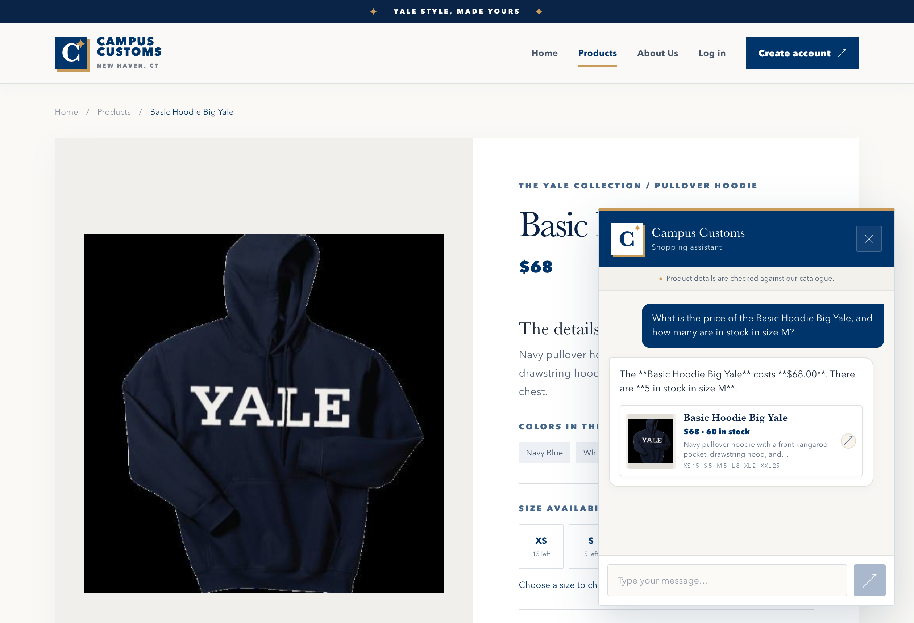
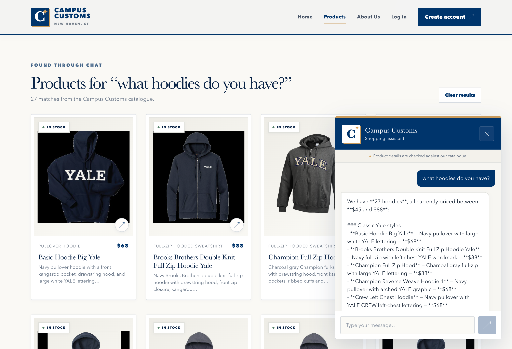
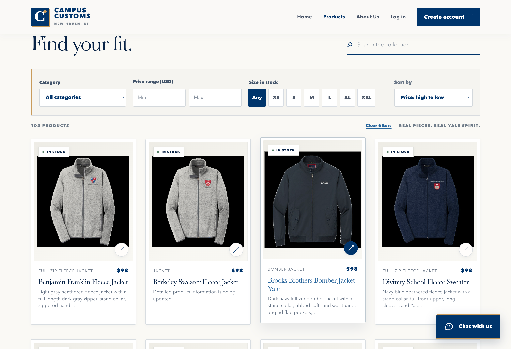

Campus Customs · Problem 11
Site testing
Three live checks of the running React site, FastAPI Agent, and catalogue controls.
Checks passed in the running app. Chat answers and product cards were verified against the local catalogue and inventory, and sorting changed the visible product order.
Test 1 — Chat price and size inventory

The live chat answers the price and size-M stock question for Basic Hoodie Big Yale: $68 and 5 units. Both values match the SQLite catalogue and inventory.
Test 2 — Dynamic hoodie search from chat

The question “what hoodies do you have?” returns 27 catalogue matches and adds linked product cards to the Products page. The screenshot shows their real images, names, prices, and descriptions beside the chat response.
Test 3 — Product sorting

With “Price: high to low” selected, the first visible products cost $98. The selected control and reordered cards appear together, showing that the catalogue sort changes the page.